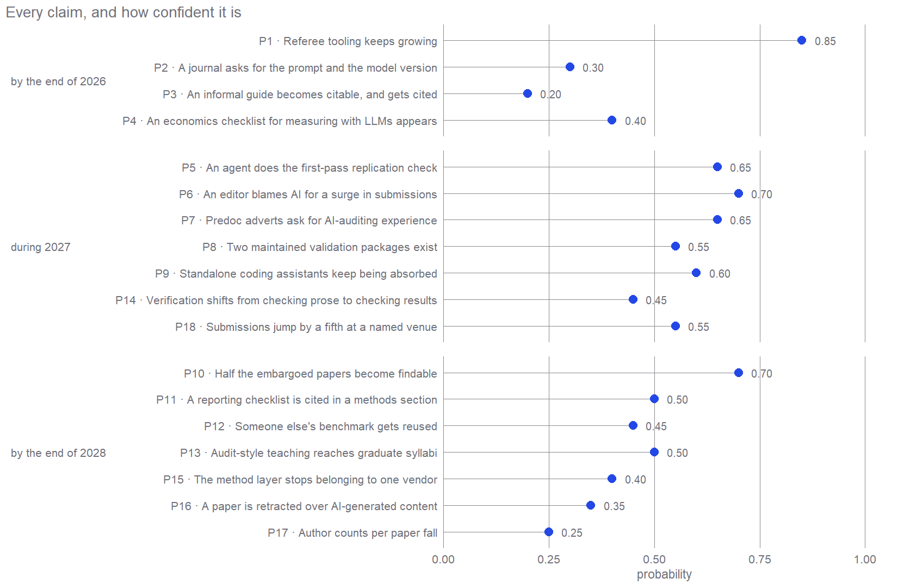

The predictions scoreboard
Eighteen dated bets, each with a probability, each written so it can be marked wrong
Supplement
The rest of this site counts things that already happened. This page does the opposite, and it is the only page that changes after publication. 18 claims about the next two to five years are written down here in advance, each with a probability, each phrased so that a reader in 2028 can mark it true or false without having to ask the author what he meant.
The rules are dull and they are the whole point. A claim has to name a date. It has to carry a probability. It has to say what would count and, harder, what would not. It has to be checked against the world first, because a forecast that is already true is not a win, it just makes the forecaster look better calibrated than he is. Six claims were thrown out on exactly that ground before this page was published.
The whole register, in one picture
Read the spread rather than any single dot. Nothing sits at 0.95, because a claim that certain is not worth making, and nothing sits at 0.05, because a claim that unlikely is not worth checking. The confident end is where today’s trend simply continues. The uncertain end is where an institution has to decide something.
The claims
Each one gets a plain heading, then the claim exactly as it was frozen, in the deliberately fussy wording that makes it scoreable. The fine print underneath, how it will be scored, what does not count, the closest thing to it that has already happened, is folded away and one click from view.
By the end of 2026
p = 0.85P1 · Referee tooling keeps growing
The referee kind grows into the three largest tool kinds in the collection, and the verification family does not shrink below the 15 tools it holds at the freeze.
The fine print
How it will be scored, from this collection. Scored from tool_kinds.csv, rebuilt by build_metrics.R from the frozen hand labels. Counts and rank only, never a share, because the tool denominator moves with whatever the collection sweeps in, so a share claim would measure curation rather than the field. Rank uses competition ranking, so tied kinds share the better rank and a tie for third resolves this claim TRUE. That is stated here rather than argued in December, when referee sits one tool away from a tie. The result must also survive dropping any single source_doc, which must not undo it. And the claim carries a pre commitment that no acquisition sweep aimed at referee tools runs between the freeze and resolution. Scoring it without honouring that pre commitment is scoring a shopping list.
What does not count. Tool rows marked dup=1 in tool_labels.csv do not count. They are the same work as another row, since the five Backman skill files are one bundle, gh-davidvandijcke-coarse is the repository behind coarse.ink, and the Elicit org, channel and PyPI pages are one product. Counting them is what made this claim’s first baseline wrong.
The closest thing that has already happened. Referee holds 9 tools at rank 4, tied with workflow, while data leads at 17 and literature at 13. One tool separates referee from a tie at third, and the tie rule above says a tie counts.
How this could come true for the wrong reason. The collection is curated by the forecaster, so the numerator moves with acquisition. The pre commitment against a targeted sweep and the check that dropping any single source does not undo the result both exist because without them this forecasts shopping rather than the field. If either is broken the claim is VOID rather than false.
Checked not to be true already, on 27 July 2026. False at the freeze, and the version it replaces was worse than open, because it was wrong. It said verification was already the largest single kind at 21 tools, ahead of data at 18 and literature at 17. Both halves fail. The counts double counted six same work rows, and verification was a family of seven kinds being compared against single kinds, which it could hardly lose. Honestly counted, the family is 15, referee is 9 and fourth of 25 kinds, tied with workflow, and data leads at 17.
Where the numbers stood when this was frozen. verif_family_n = 15, referee_n = 9, referee_rank = 4, kind_top_n = 17, referee_n_freeze = 9, referee_rank_freeze = 4, kind_top_n_freeze = 17. Each one is recounted every time the page is built.
p = 0.30P2 · A journal asks for the prompt and the model version
Beyond disclosure, at least one of the venues frozen in policy_venues.csv reaches rung 2 of the four rung ladder by the resolve date, meaning it requires an archived prompt and a pinned model version for a variable derived from an LLM and used in results.
The fine print
How it will be scored, from public pages. The four rungs are fixed here. Rung 0 is silent, rung 1 is disclosure of AI use, rung 2 requires an archived prompt and a pinned model version for a variable derived from an LLM, and rung 3 requires evidence of agreement against human labels. Rung is read from author guidelines, the editorial policy page, a submission form field, a data editor policy page or an annual report, and from nothing else, so a conference remark or a personal blog post does not move a venue. A policy in force at any point in the window counts even if it is later softened, because the ladder records the high water mark with its date. Scoring the rung rather than the summit means the register learns something in the years when the answer is still no.
What does not count. Policies that require disclosure and nothing more do not count, and that is the bar this claim sits above. The AER already bars AI authorship and requires disclosure by both authors and reviewers. Ordinary data and code replication materials do not count either, which is what QJE already requires. The requirement must attach to EVIDENCE for the variable derived from an LLM. The Economic Journal and AJPS are named comparators rather than scorers, since AJPS carries an AI policy and political science is a neighbouring discipline, exactly as Organization Science is for P6. Neither can resolve this claim.
The closest thing that has already happened. The AER sits at rung 1, with disclosure by authors and reviewers and no evidentiary requirement for a variable derived from an LLM. One rung short, and that rung is the whole distance this claim measures.
How this could come true for the wrong reason. Kustov’s Part III argues that disclosure is not a stable equilibrium, since disclosers bear a reputational cost while quiet users free ride, so pressure runs toward LESS disclosure. If that holds, rung 1 decays instead of advancing and this claim fails for a reason the ladder itself records.
Checked not to be true already, on 28 July 2026. Open at rung 1. The AER requires disclosure of AI use by authors and reviewers and holds authors responsible for accuracy, which is rung 1 and no further. The QJE requires ordinary replication materials with no clause specific to LLMs, which is rung 0 for this purpose. The version this replaces was a single yes or no over the same ground, so it could report nothing at all until it flipped.
Where the numbers stood when this was frozen. policy_venue_n = 7, policy_rung_max = 1. Each one is recounted every time the page is built.
p = 0.20P3 · An informal guide becomes citable, and gets cited
At least one of the field’s informal method guides acquires a citable identity, meaning a DOI through Zenodo, JOSS or a journal, AND is cited in a peer reviewed economics article, closing the return path this map says does not exist.
The fine print
How it will be scored, from public pages. Zenodo, JOSS or a DOI registry establishes the citable identity, and a citation search in peer reviewed economics journals establishes the citation. The roster is closed at the freeze, so a guide that first circulates afterwards cannot resolve this claim, because a claim whose population grows is a claim that gets easier with time.
What does not count. A work that was a peer reviewed journal article from the start does not count. Korinek’s JEL survey carries a DOI and reads like a guide, but a journal article is not an informal guide ACQUIRING an identity. To qualify, the guide must have circulated informally first, on an author site, a public repository or a course page, and then get a DOI. Self citation does not count, so the citing article must share no author with the guide, because the guide’s own author citing it is a formality rather than the return path this claim is about. An NBER working paper is not a peer reviewed economics article here. And a DOI minted automatically by a preprint server does not count as ACQUIRING a citable identity, because the deposit must be deliberate, through Zenodo, JOSS or a journal, or else the claim resolves on infrastructure rather than on the field changing its mind.
The closest thing that has already happened. Korinek’s JEL survey reads like a guide and carries a DOI, but it was a journal article from the start, so it tests nothing this claim is about. On the roster itself there are ten guides and no DOI observed.
How this could come true for the wrong reason. The roster is drawn from what this corpus can see, which is heavy on Substack. If the return path opens somewhere the corpus does not look, such as a working paper series or a teaching repository, this scores false while the phenomenon happens.
Checked not to be true already, on 28 July 2026. Open, over a roster that now exists. The version this replaces named the field’s informal method guides without ever writing down which guides, so one in five and one in fifty would have scored identically. Ten are now named with their URLs and their DOI status at the freeze, and none carries a DOI.
Where the numbers stood when this was frozen. guides_roster_n = 10. Each one is recounted every time the page is built.
p = 0.40P4 · An economics checklist for measuring with LLMs appears
A named, numbered reporting checklist of at least eight items for measurement based on LLMs, scoped specifically to economics rather than to a broader field that includes economics, is released as a preprint or peer reviewed article.
The fine print
How it will be scored, from public pages. Three mechanical conditions are fixed here so resolution does not turn on an adjective. The checklist must carry eight or more numbered items. The word economics or economic must appear in its title or in its own stated scope. And a majority of credited authors must hold economics affiliations. Any public version during the window counts, so a preprint that reaches eight items on revision qualifies from that revision onward. The NUMBER of qualifying checklists is recorded rather than only the yes or no, because two rival checklists confirm the underlying thesis more strongly than one, and the register should be able to say so.
What does not count. Two existing checklists are excluded and neither can satisfy this claim. ELEVATE-GenAI, published by ISPOR in Value in Health in 2025, is scoped to health economics and outcomes research. GUIDE-LLM, in Nature Human Behaviour, is a 14 item peer reviewed checklist for behavioural and social science, developed with economics experts among others, which makes it economics INCLUSIVE rather than economics scoped. A qualifying checklist must name economics as its scope, not as one discipline among several. The eight item threshold is arbitrary. It is frozen here rather than defended, precisely so that whoever scores this cannot quietly bend it.
The closest thing that has already happened. GUIDE-LLM has 14 numbered items, is peer reviewed, and had economics experts on its panel. It fails the scope condition alone, being written for behavioural and social science. ELEVATE-GenAI fails the same condition from the health economics side.
How this could come true for the wrong reason. A field can acquire its reporting standard by adopting a neighbour’s rather than writing its own. If economics simply cites GUIDE-LLM, this claim fails while the need it names is met, which is exactly why P11 scores the citation and this one scores the artifact.
Checked not to be true already, on 27 July 2026. Open as narrowed. The version this replaces said general economics without saying whether a checklist that merely includes economics counted, which made it unscorable rather than merely uncertain, since GUIDE-LLM satisfies one reading of that phrase and fails the other. The wording now says which reading applies.
During 2027
p = 0.65P5 · An agent does the first-pass replication check
The AEA Data Editor or at least one top five journal reaches tier 2 or higher on the frozen ladder for agent checking, meaning an agent performs the first pass reproduction of submission code with human sign off, stated publicly, on standard accepted submissions rather than a one off pilot.
The fine print
How it will be scored, from public pages. The ladder is fixed here. Tier 0 has no model in the checking path. Tier 1 is a human team using AI tools ad hoc. Tier 2 has an agent performing the first pass with human sign off, stated publicly. Tier 3 has the agent checking autonomously. Tier 2 or higher resolves this true, and the tier reached is recorded with its date. Buying counts as adopting, so a journal contracting a vendor whose product is reproduction run by an agent is tier 2 or tier 3 depending on sign off, because the bet is that journals ACQUIRE agent checking rather than that they build it. The public tell is the AEA Data Editor’s own repositories, since a release that imports an LLM SDK into the reproducibility path is evidence anyone can check.
What does not count. One off pilots, hackathons and demonstrations do not count, because the system must run on standard accepted submissions. Automated or containerized re-execution without an LLM or an agent doing the checking does not count either, because the AEA already has that. A human reproducibility team using AI tools ad hoc does not count, because that is tier 1 and this claim needs tier 2.
The closest thing that has already happened. The AEA already runs automated containerised re-execution. The distance to tier 2 is a model call inside a pipeline that already exists rather than a new institution.
How this could come true for the wrong reason. Tier 3 may never be publicly distinguishable from tier 2, because no institution advertises that nobody reads the output. Scoring the ladder rather than the word autonomously is what stops that ambiguity deciding the claim.
Checked not to be true already, on 28 July 2026. Open at tier 0. The AEA Data Editor runs automated, containerised re-execution with no model in the checking path, and the Economic Journal assigns its checks to a human team. The version this replaces asked only about tier 3, which no institution would ever advertise, since nobody announces that a human has stopped reading the output.
Where the numbers stood when this was frozen. policy_venue_n = 7. Each one is recounted every time the page is built.
p = 0.70P6 · An editor blames AI for a surge in submissions
At least one top five economics journal or a named economics data editor publicly reports a rise in submissions or in desk rejection rate that it attributes to manuscripts generated by AI.
The fine print
How it will be scored, from public pages. A quotable public statement or annual note from an economics editor or data editor. This claim scores the SENTENCE. Its numeric twin is P18, which scores the submission count and needs no attribution. They are separated deliberately, because the likely world is one where submissions rise and no editor says why, and a register that cannot represent that world learns nothing from it.
What does not count. Statements from outside economics do not count. The Organization Science finding is real, with a 42% submission surge, AI use detected in the majority of manuscripts by February 2026, and much higher desk rejection rates for papers heavy in AI use, and it is the precedent this claim sits above, but it is a management journal. A press interview with an editor speaking personally does not count, because it must be a journal or data editor statement. A named economics data editor means one of the offices frozen in policy_venues.csv rather than any journal that has appointed one.
The closest thing that has already happened. Organization Science reports submissions up 42%, AI use in a majority of manuscripts by February 2026, and much higher desk rejection rates for papers heavy in AI use. It is a management journal, so it is the precedent and not the resolution.
How this could come true for the wrong reason. Attribution is a speech act and editors have every reason to avoid it, since naming AI as the cause invites a fight with their own authors. The number can rise for two years while nobody says the word, which is what P18 exists to catch.
Checked not to be true already, on 27 July 2026. Open for economics. The management field got there first, with hard numbers. No qualifying statement from a top five economics editor or a named economics data editor was found.
Where the numbers stood when this was frozen. policy_venue_n = 7. Each one is recounted every time the page is built.
p = 0.65P7 · Predoc adverts ask for AI-auditing experience
Postings for research assistants or predocs from at least three top 20 departments or named labs require experience auditing, validating or verifying AI or LLM output specifically, as distinct from replication and reproducibility work in general.
The fine print
How it will be scored, from public pages. Postings are captured from the twenty departments frozen in departments_frame.csv over one full hiring cycle, from August to February, because predoc hiring is seasonal and a December sample catches the middle of a cycle while a June sample catches nothing. Every posting is archived with its URL and the date of capture, because postings die within weeks and the evidence for a null result evaporates exactly as fast as the evidence for a positive one. The TOTAL number of postings captured is recorded beside the count carrying audit language about AI, so the denominator is visible.
What does not count. Generic replication and reproducibility language does not count, and this is exactly what retired the first version of this claim. LBS with ‘replication of results’, Dartmouth with ‘constructing replication materials’ and Cornell with ‘Replication Lab Coordinator and Research Assistant’ already carried that vocabulary before the claim was written, and none of it was motivated by AI. The posting must name AI or LLM output as the thing being checked. Three postings from one department count once. If total captured postings from the frame fall by more than 25% against the first full cycle, this claim resolves VOID rather than false, because the channel closed, and a vocabulary cannot spread through a channel that is no longer there.
The closest thing that has already happened. A 2026 Notre Dame postdoc advertisement asks explicitly for interest in agentic AI tools. It fails three ways, being a postdoc rather than a research assistant or predoc, asking for interest in tools rather than for auditing their output, and coming from outside the top 20 frame, but it dates the vocabulary’s arrival at March 2026 and is the closest case observed.
How this could come true for the wrong reason. Kustov states plainly that he no longer envisions a research assistant role in his workflow. If that spreads, the audit vocabulary can be diffusing while the postings vanish, and a claim that counts only the numerator would read the collapse of the apprenticeship channel as evidence against change driven by AI.
Checked not to be true already, on 27 July 2026. Open as rewritten. The version this replaces asked only for three postings containing reproducibility or verification vocabulary and did not require the language to be new or motivated by AI, so it was already true the day it was written, satisfied by postings that predate the AI question entirely.
Where the numbers stood when this was frozen. dept_frame_n = 20. Each one is recounted every time the page is built.
p = 0.55P8 · Two maintained validation packages exist
At least two validation suites for measurement with LLMs, scoped to economics and written by more than one author, exist, each with two or more credited authors, a commit within the trailing 12 months, and rOpenSci review or a place on JOSS or CRAN.
The fine print
How it will be scored, from public pages. Scored from the rOpenSci, JOSS and CRAN registries, on each package’s own stated scope. Corpus tool rows are corroborating only and never decisive. The conditions are mechanical and read off registry pages, requiring two or more credited authors, a commit within the trailing twelve months, and either an economics term in the CRAN or JOSS description or a published application in an economics venue.
What does not count. General purpose suites do not count, however usable they are by economists, and naming them is what makes this claim scorable at all. quallmer, on CRAN with two authors, covering qualitative measurement with LLMs against a gold standard, and oolong, on CRAN and JOSS with two authors, covering validation for automated content analysis, were both updated in May and June 2026 and both fail on scope alone. A qualifying suite must be documented for economics measurement tasks, or published by authors with economics affiliations in an economics venue. The two suites must have DISJOINT author groups, because one prolific lab shipping two packages is not the field converging on a standard, and P12 learned that lesson expensively. A package that qualified at any point in the window counts even if CRAN later archives it over an unanswered maintainer email, because archival is a maintenance event rather than a verdict on the field.
The closest thing that has already happened. quallmer and oolong satisfy every condition except scope, with two authors each, both current on CRAN, both updated in May and June 2026, and neither documented for economics measurement.
How this could come true for the wrong reason. Economics may never scope a suite to itself and may instead adopt a general one with an economics vignette, satisfying the need this claim names while failing its letter.
Checked not to be true already, on 27 July 2026. Open as narrowed, and the narrowing was necessary rather than cosmetic. As first written, validation suites for economics measurement with LLMs did not say whether a general suite usable by economists counted. Under the loose reading quallmer and oolong already satisfy it, which would have made this a fifth claim that was already true.
p = 0.60P9 · Standalone coding assistants keep being absorbed
The standalone category keeps dissolving, so at least two of the coding assistants still independent at the freeze, meaning the cohort marked independent in coding_assistants_2026.csv, are discontinued, acquired, or folded into a general agent platform by the resolve date.
The fine print
How it will be scored, from public pages. The cohort is the rows marked independent in the frozen file. Any one of these public signals counts as the event, whether an end of life notice, an acquisition announcement, the product URL redirecting to a parent platform’s page, or the source repository archived by its owner. A product that keeps its brand but becomes a MODE inside a platform does count, because the claim is about the category dissolving rather than about a trademark disappearing.
What does not count. Four events that had already happened at the freeze are named and excluded, because this claim has now twice been at risk of being true when written. Windsurf was acquired by Cognition and folded into the Devin family as Devin Desktop, reported on 2 June 2026. A Cursor acquisition was reported to close in Q3 2026. Continue.dev was acquired by Cursor. And Cody was superseded by Amp. Aider is excluded for the opposite reason, since it is reported dormant, and going quiet is not an announcement, which makes it the named precedent for that rule. The premise that agent coding becomes a platform default is excluded as already true, because GitHub, VS Code and JetBrains all ship agents on by default.
The closest thing that has already happened. Aider has effectively stopped without anyone announcing anything. It is the exact shape this claim refuses to count, and the reason repository archival is on the signal list above.
How this could come true for the wrong reason. The evidence is secondary reporting rather than vendor announcements, and the accounts conflict, since one describes Cognition acquiring Windsurf in December 2025 and another OpenAI acquiring it in March 2026. If that reporting is wrong then the exclusions are wrong and the cohort is cut in the wrong place.
Checked not to be true already, on 28 July 2026. Open over the remaining cohort, and the version it replaces was at or past the line. Secondary reporting describes two qualifying absorptions inside 2026, with Windsurf going into Devin Desktop and Continue.dev into Cursor, plus a Cursor acquisition reported to close in Q3. Under the previous wording, which asked for two products shipped in 2026 to be discontinued, acquired or folded in, that is arguably already satisfied. Rather than retire a third claim for being true when written, the cohort is now the products STILL independent at the freeze, and the four absorbed ones are named as exclusions. The same fix also closes the hole that retired the first version, which named products that shipped during 2026 without ever listing them, and that is the accidental sample problem in a smaller disguise.
Where the numbers stood when this was frozen. assistants_cohort_n = 6, assistants_excluded_n = 5. Each one is recounted every time the page is built.
p = 0.45P14 · Verification shifts from checking prose to checking results
The verification tooling shifts from checking prose to checking results, so tools that re-run or score an analysis reach at least a quarter of the verification family and at least 6 tools in absolute count, up from 3 of 15.
The fine print
How it will be scored, from this collection. The gold kind labels in tool_labels.csv, mapped through the frozen subgroup vocabulary in scenario/data/frozen/verif_subgroups.csv and counted by build_metrics.R. The share is computed over the family of 15 frozen in metric_freeze.csv rather than over the live family, so growth in the collection cannot move the percentage by itself, and the live family is reported beside it. A tool that BOTH reads a draft and re-runs the analysis is a results checker, and that tie break is written into verif_subgroups.csv, added while no tool carried the label and it could not yet move the score. Subgroup labels for new tools are assigned before their effect on the score is computed.
What does not count. The evaluation kind counts toward the family but toward NEITHER side of the split, because it grades a model rather than a manuscript or an analysis. Naming it matters, because the published baseline read 17 manuscript and 3 results out of 21, which loses rows twice over, once to the unassigned evaluation kind and once to six same work duplicates. Tool rows marked dup=1 do not count.
The closest thing that has already happened. 3 of 15 is 20%, against a threshold of 25% plus an absolute floor of 6 tools. Two new results checkers clear the percentage, and three clear both.
How this could come true for the wrong reason. Kustov’s Part II reports that the AI written Part I passed every major AI detector as 100% human. If checking on the manuscript side is failing at its flagship task, tools may migrate to results checking for exactly the reason this claim predicts, or the whole verification family may stall because nobody trusts any of it.
Checked not to be true already, on 27 July 2026. Open, and considerably closer to true than the published baseline made it look. Honestly counted the split is 11 manuscript, 3 results and 1 neither out of 15, so results checking already stands at 20% rather than the 14% that 3 of 21 implied. That is why the threshold gained an absolute floor, because at a family of 15 a single new results checker would cross 25% by itself, and a forecast one tool wide is not a forecast.
Where the numbers stood when this was frozen. verif_family_n = 15, verif_manuscript = 11, verif_results = 3, verif_neither = 1, verif_results_pct = 20, verif_family_freeze = 15, verif_results_freeze = 3, verif_results_pct_freeze = 20. Each one is recounted every time the page is built.
p = 0.55P18 · Submissions jump by a fifth at a named venue
At least one of the venues frozen in policy_venues.csv reports a rise in submissions of 20% or more from one year to the next, for 2026 or 2027, whether or not it attributes the rise to anything.
The fine print
How it will be scored, from public pages. Annual reports, editors’ reports and AEA editorial notes. No attribution is required, because this claim scores the COUNT while P6 scores the sentence. Where a venue publishes submissions only as a total, that total is the series.
What does not count. A rise reported by a journal outside the frozen venue list does not count. A rise in DESK REJECTIONS without a rise in submissions does not count either, because that is P6’s territory, and conflating the two is how a capacity story gets told with the wrong number.
The closest thing that has already happened. Organization Science at 42%, which is above the threshold but in the wrong discipline.
How this could come true for the wrong reason. Not every journal publishes submission counts, and those that do may stop. This can fail on data availability rather than on the world, which is the mirror image of P6’s failure mode.
Checked not to be true already, on 28 July 2026. Open, and its main weakness is stated rather than hidden. The submission baselines were NOT captured at the freeze, which policy_venues.csv records honestly in its submissions_baseline column. The first resolution round must capture the base year before this can be scored at all.
Where the numbers stood when this was frozen. policy_venue_n = 7. Each one is recounted every time the page is built.
By the end of 2028
p = 0.70P10 · Half the embargoed papers become findable
At least half of the 47 NBER working papers listed in scenario/data/frozen/nber_embargoed.csv have a findable open mirror by the end of 2028, discoverable by the stated resolution procedure, whether or not this corpus has re-fetched them.
The fine print
How it will be scored, from public pages. The frozen cohort file, searched paper by paper over the world, meaning the author site, the NBER open chapter series and institutional working paper series, and NOT this corpus’s fetch lane. Each mirror found is recorded in the cohort file’s resolved_on and resolved_mirror_url columns, so the score is a count of filled rows. The search effort is fixed here so a motivated searcher in 2028 cannot make this true by looking harder. Per paper, check the author’s own site, RePEc, and Google Scholar’s list of all versions, for up to ten minutes, then stop and record the outcome either way.
What does not count. A copy behind the NBER paywall does not count, and neither does this corpus successfully fetching one, because the claim is about the world rather than about our access. The cohort is closed at the freeze. Papers embargoed after it do not join, and papers added to the corpus later are irrelevant to it. An open access PUBLISHED version DOES count as a mirror, because the claim is about whether the work became readable without paying rather than about which version did it. That is decided here rather than in 2028 with a score riding on it.
The closest thing that has already happened. 0 of 47 at the freeze. All 47 sit in lane=manual with handler=nber_embargo and no successful fetch.
How this could come true for the wrong reason. Embargo lapse and authors posting their own work are the mechanism, but if NBER changes its embargo terms the whole cohort could resolve at once for a reason that has nothing to do with the AI story this scoreboard is about.
Checked not to be true already, on 27 July 2026. Open, with 0 of 47 mirrors found at the freeze. Until this rewrite the claim named the NBER working papers embargoed at v1.0, which was a set nobody had written down, pinned to a tag nobody had cut. It is now a file with 47 rows, two empty resolution columns, and a SHA-256 in the freeze manifest.
Where the numbers stood when this was frozen. nber_cohort_n = 47, nber_open_mirrors = 0. Each one is recounted every time the page is built.
p = 0.50P11 · A reporting checklist is cited in a methods section
A named reporting checklist for measurement with LLMs is cited in the methods section of a peer reviewed economics article outside health economics.
The fine print
How it will be scored, from public pages. A citation search in peer reviewed economics methods sections. P4 and P11 are a ladder, where the standard exists and then the standard gets used, and their probabilities should be read together. P11 sits above P4 only because GUIDE-LLM and ELEVATE-GenAI already exist as citable objects, so this claim does not depend on P4 resolving true.
What does not count. Health economics is out of scope in the CITING article rather than merely in the checklist. Any named checklist counts as the thing cited, including ELEVATE-GenAI and GUIDE-LLM, so it does not have to be the one P4 predicts. A mention in a literature review, a footnote or a related work paragraph does not count, because it must sit in the methods section, as the standard the paper followed. Self citation does not count, so the citing article must share no author with the checklist. The methods section includes a methods appendix or supplementary methods, so a paper cannot fail this claim merely by moving its methods online.
The closest thing that has already happened. Both checklists exist and are citable. No peer reviewed economics article outside health economics was found citing either in its methods.
How this could come true for the wrong reason. Economics may cite a checklist in a robustness appendix or a referee response rather than in methods, satisfying the spirit while failing the letter.
Checked not to be true already, on 27 July 2026. Open. GUIDE-LLM and ELEVATE-GenAI both exist and are citable, and no peer reviewed economics article outside health economics was found citing either in its methods section.
p = 0.45P12 · Someone else’s benchmark gets reused
Benchmark building enters the field’s credit economy, so a gold labelled economics text dataset built by economists is used as the evaluation set in at least two peer reviewed economics articles whose author lists are disjoint from the original team.
The fine print
How it will be scored, from public pages. A citation and reuse search from the dataset record, checking each citing article’s author list against the original team’s.
What does not count. The EXISTENCE of such a dataset is excluded, because it already happened. BeigeSage, in Applied Economics and online on 24 March 2026, released a public OSF dataset of 1,000 Beige Book passages labelled by hand for a recurring task in economic sentiment, by authors with economics and business economics affiliations in an economics venue, satisfying every written condition of the version this replaces. Corpora from the NLP community remain excluded as before, since the World Central Banks corpus and Financial PhraseBank were built by NLP groups at NLP venues. Self citation by the dataset’s own authors does not count, which is what the disjoint author condition is for. The two citing articles must be disjoint from the original team AND from each other, because one lab adopting the dataset twice is one lab. A paper that fine tunes on part of the gold labels and evaluates on the rest DOES count, because the labels are still doing evaluative work.
The closest thing that has already happened. BeigeSage exists, with 1,000 Beige Book passages labelled by hand and a public OSF release. Independent reuse is none found.
How this could come true for the wrong reason. Reuse may happen inside industry or central bank research that never reaches a peer reviewed economics journal, so this can fail while the benchmark is genuinely adopted.
Checked not to be true already, on 27 July 2026. Open as rewritten, and this is the second time this claim has been retired for being already true, which is the same clock error made twice on the same question. The first version asked whether such a benchmark existed, and it did, built by NLP groups. The second asked whether ECONOMISTS would build one, and they had, four months before the claim was drafted. What is genuinely open is whether anyone else uses it, which is the harder half, because benchmark building carries little disciplinary credit until someone does.
p = 0.50P13 · Audit-style teaching reaches graduate syllabi
Audit style pedagogy adopted explicitly as a measure of AI integrity appears in graduate economics syllabi at three distinct institutions, whether as planted error assignments, audits of AI output, or oral examination newly introduced for that purpose.
The fine print
How it will be scored, from public pages. The frame is the twenty departments frozen in departments_frame.csv, whose graduate methods and econometrics course pages are snapshotted at the freeze and checked at the same addresses at resolution. Deciding where to look before looking is what makes a null result mean anything, because most syllabi were never public, and an open ended search that finds nothing mostly measures the opacity of course materials.
What does not count. Oral examination that predates the AI question does not count, because many programmes have always had it, so the syllabus must state a motivation of AI integrity. Undergraduate courses do not count. Three such courses at one institution count once. Evidence sufficiency is decided here. An assignment whose TEXT requires auditing, correcting or replicating AI output counts even when the syllabus never states a motive of AI integrity, because syllabi almost never explain why an assignment exists. Demanding the confession as well as the assignment would score a false negative on a true phenomenon.
The closest thing that has already happened. A Bath economics assignment requires students to critique AI output. That is one institution, and not a graduate syllabus.
How this could come true for the wrong reason. Most syllabi are not public. A null over the frame may measure that opacity rather than the absence of the practice, which is why the frame is fixed and snapshotted rather than searched afresh each time.
Checked not to be true already, on 27 July 2026. Open. The closest case found is a Bath economics assignment requiring students to critique AI output, which is one institution and not a graduate syllabus. No set of three institutions was found.
Where the numbers stood when this was frozen. dept_frame_n = 20. Each one is recounted every time the page is built.
p = 0.40P15 · The method layer stops belonging to one vendor
The method layer stops being single vendor, so the share of the guides and tools register naming the Anthropic stack falls below half, or documents naming an open weight model rise from the 19 held at the freeze to at least 40.
The fine print
How it will be scored, from this collection. Recomputed by build_metrics.R over document body text with the patterns frozen in vendor_regex.csv and the extractor pinned to the toolchain named in MANIFEST.md. That pinning is not decoration, because this project has already watched a pdftools upgrade change document bodies extracted from byte identical blobs, so a regex over re-extracted text could move these counts with no document having changed. The frozen register in vendor_register_freeze.csv is the baseline the change is measured FROM rather than the population it is measured OVER, because freezing the population would make the claim vacuous, since the same 117 documents will never change what they say. Three guards replace that. The shift must hold on the live register AND among documents added after the freeze. It must survive dropping any single source. And no acquisition sweep aimed at a vendor may run between the freeze and resolution.
What does not count. The papers register is not part of this claim. It leans the other way, with OpenAI ahead of Anthropic, and reporting the two side by side is what produced the wrong baseline, because the published figure of 30 of 43 guides used the guides denominator for a claim written over guides and tools. Tool rows marked dup=1 do not count. Commentary is deliberately OUT of the register, and the cost is stated rather than hidden, since all three parts of Kustov’s series were written with Claude Code and say so, and they sit in the article register, outside this denominator. The register is guides and tools because those are the artifacts a practitioner installs and follows, and counting commentary would measure enthusiasm rather than dependency.
The closest thing that has already happened. 58.1% Anthropic against a 50% threshold, and 19 open weight documents against a floor of 40. Neither condition is near.
How this could come true for the wrong reason. This is the claim whose outcome the maintainer can most easily move, because ingesting thirty open weight tool pages would satisfy the second condition without anything changing in the field. The test on documents added after the freeze, the check that dropping any single source does not undo the result, and the pre commitment against a targeted sweep are what stand between this claim and a shopping list, and they are weaker guards than a frozen cohort. If they are broken the claim is VOID.
Checked not to be true already, on 27 July 2026. Open, and neither condition holds. On the register the claim names, which is guides plus tools, the FROZEN baseline is 117 documents with full text, of which 68 name the Anthropic stack at 58.1%, 63 name OpenAI and 19 name an open weight model at 16.2%. The LIVE register has already moved to 122 documents, with 71 naming Anthropic at 58.2% and 19 naming an open weight model at 15.6%, after the acquisition round of 28 July 2026, and that first drift is worth reading, because the open weight share fell from 16.2% to 15.6% purely because the documents swept in named the incumbents. Both sets of numbers are carried on purpose. The frozen pair is what the claim is measured from, and the live pair sits in the baseline so that growth FIRES the gate and forces a deliberate re-baseline instead of a silent one. The published figure this replaces, 30 of 43 guides, was the right direction on the wrong denominator.
Where the numbers stood when this was frozen. vend_prac_docs = 122, vend_prac_anthropic = 71, vend_prac_openai = 65, vend_prac_openweight = 19, vend_prac_anthropic_pct = 58.2, vend_prac_openweight_pct = 15.6, vend_frozen_docs = 117, vend_frozen_anthropic = 68, vend_frozen_openweight = 19. Each one is recounted every time the page is built.
p = 0.35P16 · A paper is retracted over AI-generated content
A paper in a peer reviewed economics journal is retracted or formally corrected, with the notice naming content generated or fabricated by AI as a cause, by the resolve date.
The fine print
How it will be scored, from public pages. Retraction Watch, the publisher’s own notice, and Crossref retraction metadata. The notice must name content generated or fabricated by AI, whether a fabricated citation, a hallucinated result or an invented dataset, as a cause, in an economics journal.
What does not count. A correction for an ordinary coding error does not count even if a model wrote the code, because the notice must attribute the defect to CONTENT GENERATED BY AI. A preprint withdrawal does not count, because a preprint has no editorial process to fail. A retraction in a management venue, a finance adjacent venue or a general science venue does not count, for the same reason Organization Science cannot resolve P6.
The closest thing that has already happened. A Kyiv School of Economics researcher wrote an article generated by ChatGPT about a fictional Pacific country and submitted it to a journal in early 2026. That is an experiment rather than a retraction, and the venue was not an economics journal.
How this could come true for the wrong reason. Journals can handle content fabricated by AI quietly, through a correction that never names the cause, or by desk rejecting before publication. The scandal can therefore happen without leaving the public notice this claim requires.
Checked not to be true already, on 28 July 2026. Open, and added deliberately as the accelerant the rest of the register assumes away. P2, P5 and P6 all quietly assume institutions move under gradual pressure. Research integrity policy historically moves after a scandal, as with Stapel, Hauser and Gino, rather than before one. If this fires, those three become substantially more likely, which is the point of carrying it, because it makes a hidden correlation in the portfolio visible instead of leaving it to surprise whoever scores it.
p = 0.25P17 · Author counts per paper fall
The mean number of credited authors per NBER working paper issued in 2028 is below the 2024 mean.
The fine print
How it will be scored, from public pages. NBER’s public working paper series, all papers issued in each calendar year, mean credited authors per paper. Both years are computed with the same script at resolution. The 2024 figure is not recorded here because it is a closed historical quantity that cannot move, so computing it later does not weaken the claim, and pretending to freeze it would be theatre.
What does not count. A revision does not count as a new paper, because the issue year is the working paper’s own. Credited authors only, so acknowledgements, research assistant credits and data provider notes are not authorship. Papers issued outside the NBER working paper series do not count, however similar.
The closest thing that has already happened. None yet. The 2024 baseline has not been computed, and the first resolution round establishes it.
How this could come true for the wrong reason. AI could raise co-authorship instead, because cheaper collaboration and larger feasible projects both push the other way, and the same technology can plausibly produce either sign. This claim is a genuine coin flip on mechanism rather than only on timing.
Checked not to be true already, on 28 July 2026. Open, and added because the register had no claim that is both quantitative and entirely outside the maintainer’s control. NBER’s series is public, large, and completely unaffected by what this corpus ingests, which makes it the only clean calibration anchor here. Kustov’s Part I supplies the mechanism, because if AI absorbs the research assistant and junior collaborator role, the decades long rise in co-authorship should stall or reverse.
Why any of this can be trusted
Three things stand behind the register, and each exists because something went wrong without it.
The rules are enforced by a script, not by memory. The first version of this page announced its rules and then checked them once, by hand, on the day it was written. An outside review months later found fifteen defects, and not one of them was a bad guess about the world. Every single one was a rule that had been written down and then forgotten: a baseline nobody recomputed, a claim that named a resolution set nobody had ever written down, a sentence claiming the page was frozen when nothing was. So the rules became 9 automatic checks that run before this page is allowed to build, and a stale number now breaks the build instead of quietly shipping.
The freeze is a file rather than a phrase. Two claims used to resolve over a set, the embargoed papers and the 2026 tool cohort, that nobody had written down, so at scoring time there would have been no way to recover which items were meant. A forecast whose population is reconstructed afterwards is not a forecast. Those sets are now files, pinned along with 14 others by checksum on 28 July 2026, and a scoring input cannot be edited quietly.
Withdrawn claims stay on the page. 15 versions of claims have been retired, mostly for being already true when written. That failure is worth publishing, because it has a pattern: the forecaster’s error was never the direction, it was always the clock. The informal, fast moving parts of this change had already happened while the formal parts had not, which is the same split between registers the main essay is about, showing up inside its own forecast.
The checks, the withdrawals, and the frozen numbers
| Check | Passed | Failed | Not applicable |
|---|---|---|---|
| G0 schema | 18 | 0 | 0 |
| G1 baseline | 12 | 0 | 6 |
| G2 falsity | 18 | 0 | 0 |
| G3 artifact | 18 | 0 | 0 |
| G4 excludes | 18 | 0 | 0 |
| G5 references | 1 | 0 | 0 |
| G6 freeze | 1 | 0 | 0 |
| G7 nearest | 18 | 0 | 0 |
| G8 counter | 18 | 0 | 0 |
Each check is itself broken on purpose in the test suite, to confirm it actually stops the build. A check that has never been seen to fail is a decoration.
| Claim | Why it was withdrawn | What it had said |
|---|---|---|
| P2 v1 | already true before drafting | At least one top five journal or the AEA Data Editor carries an explicit written policy on LLM use in submissions. |
| P3 v1 | already true before drafting | The named cast publishes at least three new guides on their own sites or public repositories. |
| P4 v1 | already true before drafting | A named, numbered reporting checklist of at least eight items, scoped to measurement based on LLMs in economics, is released as a preprint or peer reviewed article. |
| P12 v1 | already true before drafting | A public repository of gold labelled datasets validated by humans for recurring economics text classification tasks exists and has at least one citation in a peer reviewed economics article. |
| P4 v2 | unscorable as written | A named, numbered reporting checklist of at least eight items for measurement based on LLMs, scoped to general economics rather than to health economics, is released as a preprint or peer reviewed article. |
| P7 v1 | already true before drafting | Postings for research assistants or predocs from at least three top 20 departments or named labs carry explicit reproducibility, replication, verification, or audit language. |
| P9 v1 | half already true, half unscorable in principle | Leading agent coding capabilities ship as defaults in mainstream developer tools, so the share of newly released research tools that are standalone coding assistants falls relative to 2026. |
| P12 v2 | already true before drafting | Economists build their own benchmark, meaning a public gold labelled dataset for a recurring economics text classification task, released by authors with economics affiliations in an economics venue, distinct from the existing corpora built by NLP groups. |
| P9 v2 | at risk of already true | At least two AI coding assistants that shipped as separate products during 2026 are publicly discontinued, acquired, or folded into a general agent platform, each announced by the vendor. |
| P2 v2 | replaced by a ladder | Beyond disclosure, at least one top five journal or the AEA Data Editor requires, in writing, that empirical work using an LLM to produce a variable used in results supply validation evidence, such as agreement against human labels or an archived prompt and pinned model version. |
| P5 v2 | replaced by a ladder | The AEA Data Editor or at least one top five journal adopts an LLM or agent system that autonomously executes and checks submission code, applied to standard accepted submissions rather than a one off pilot. |
| P15 v1 | replaced because the outcome was movable by the maintainer | The method layer stops being single vendor, so the share of guides and tools in the collection naming the Anthropic stack falls below half, or open weight models overtake either proprietary stack in that register. |
| P1 v2 | rewritten in place, recorded late | Verification is already the largest single kind of tool in the collection, at 21 tools, ahead of data at 18 and literature at 17. |
| P8 v1 | rewritten in place, recorded late | At least two validation suites for economics measurement with LLMs exist, each with two or more credited authors, a commit within the trailing 12 months, and rOpenSci review or a place on JOSS or CRAN. |
| P14 v1 | rewritten in place, recorded late | The verification tooling shifts from checking prose to checking results, so tools that re-run or score an analysis reach at least a quarter of the verification family, up from 3 of 21. |
| Claim | Measure | When frozen | Recounted now | Agrees |
|---|---|---|---|---|
| P1 | verif_family_n | 15.0 | 15.0 | yes |
| P1 | referee_n | 9.0 | 9.0 | yes |
| P1 | referee_rank | 4.0 | 4.0 | yes |
| P1 | kind_top_n | 17.0 | 17.0 | yes |
| P1 | referee_n_freeze | 9.0 | 9.0 | yes |
| P1 | referee_rank_freeze | 4.0 | 4.0 | yes |
| P1 | kind_top_n_freeze | 17.0 | 17.0 | yes |
| P2 | policy_venue_n | 7.0 | 7.0 | yes |
| P2 | policy_rung_max | 1.0 | 1.0 | yes |
| P3 | guides_roster_n | 10.0 | 10.0 | yes |
| P5 | policy_venue_n | 7.0 | 7.0 | yes |
| P6 | policy_venue_n | 7.0 | 7.0 | yes |
| P7 | dept_frame_n | 20.0 | 20.0 | yes |
| P9 | assistants_cohort_n | 6.0 | 6.0 | yes |
| P9 | assistants_excluded_n | 5.0 | 5.0 | yes |
| P10 | nber_cohort_n | 47.0 | 47.0 | yes |
| P10 | nber_open_mirrors | 0.0 | 0.0 | yes |
| P13 | dept_frame_n | 20.0 | 20.0 | yes |
| P14 | verif_family_n | 15.0 | 15.0 | yes |
| P14 | verif_manuscript | 11.0 | 11.0 | yes |
| P14 | verif_results | 3.0 | 3.0 | yes |
| P14 | verif_neither | 1.0 | 1.0 | yes |
| P14 | verif_results_pct | 20.0 | 20.0 | yes |
| P14 | verif_family_freeze | 15.0 | 15.0 | yes |
| P14 | verif_results_freeze | 3.0 | 3.0 | yes |
| P14 | verif_results_pct_freeze | 20.0 | 20.0 | yes |
| P15 | vend_prac_docs | 122.0 | 122.0 | yes |
| P15 | vend_prac_anthropic | 71.0 | 71.0 | yes |
| P15 | vend_prac_openai | 65.0 | 65.0 | yes |
| P15 | vend_prac_openweight | 19.0 | 19.0 | yes |
| P15 | vend_prac_anthropic_pct | 58.2 | 58.2 | yes |
| P15 | vend_prac_openweight_pct | 15.6 | 15.6 | yes |
| P15 | vend_frozen_docs | 117.0 | 117.0 | yes |
| P15 | vend_frozen_anthropic | 68.0 | 68.0 | yes |
| P15 | vend_frozen_openweight | 19.0 | 19.0 | yes |
| P18 | policy_venue_n | 7.0 | 7.0 | yes |
How it will be graded
Assigning probabilities and never doing the arithmetic is decoration, so the commitment is made here, before anything resolves. Every claim that resolves will be scored, and the register will report its running average error. A claim whose measuring instrument breaks, meaning the channel it was to be counted through closes, is reported separately rather than quietly folded in.
18 claims is a thin sample and the timing is lumpy, with 4 resolving this year and the rest across 2027 and 2028, so the score will be noisy for years. Publishing it anyway is the point.
One caution when the tally arrives. These are not 18 independent bets. 5 of them are about journal policy, so if journals simply sit still they fail together, and a naive hit rate would read that as 5 bad calls when it was really one. Read the record by group first, and only then in total.